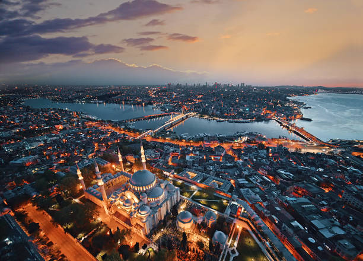
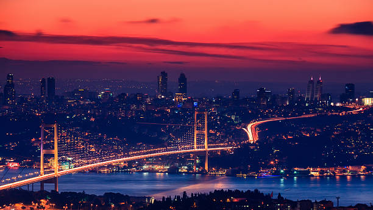

The Bosporus Strait, a natural waterway that divides Istanbul into European and Asian sides, is a significant geographical feature of the city. It not only serves as a vital international shipping route but also offers stunning views and is a popular spot for boat tours and waterfront dining.

Visitors can enjoy a cruise along the Bosporus to see Istanbul's iconic skyline, including palaces, fortresses, and mosques that line the shores. The strait's strategic location has made it a focal point in the city's history and culture, connecting two continents.
